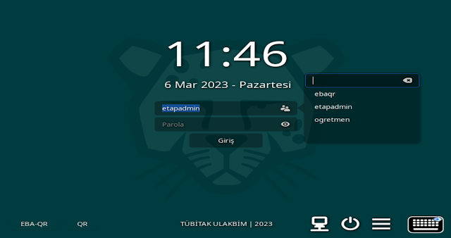
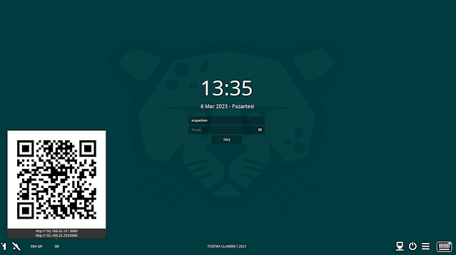
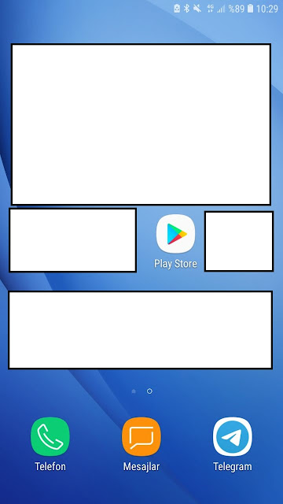
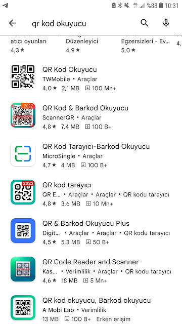
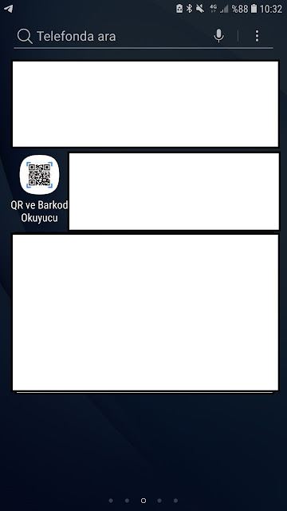
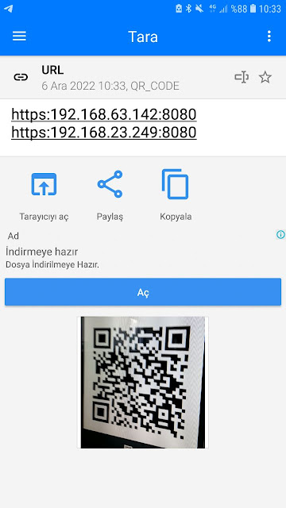
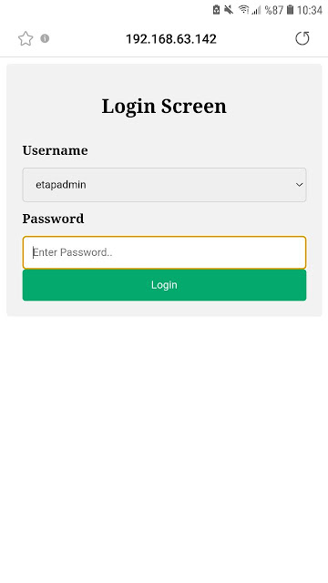
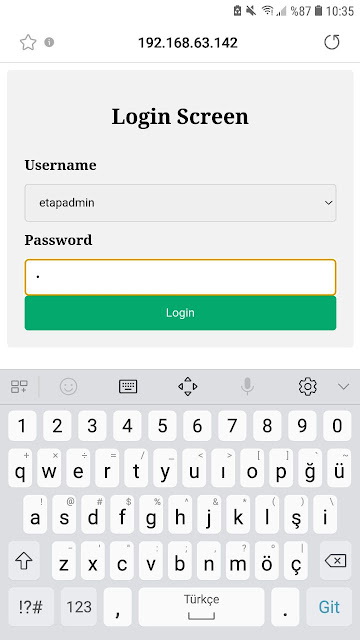

qrkod Kullanımı¶
Telefon ile tahtayı açmak için işlem adımları; 1-Tahta açıldığında aşağıdaki gibi bir ekran görünecektir.
{kind=link}
2-Fotoğraf makinası simgesine dokunduğunuzda QR kod gözükecektir. Qr kod içeriğinde bu tahtanın ip adresi bulunmaktadır.
{kind=link}
3-Telefonumuza aşağıda gösterildiği gibi QR Kod okuyucu herhangi bir uygulama yükleyiniz. Ben örnek olarak android üzerinde gösterdim fakat ios sistemlerde de aynı aşamaları yapabilirsiniz.
{kind=link}
4-İstediğiniz bir qr okuyucu olabilir.
{kind=link}
5-Yüklediğiniz uygulamayı telefonunuzda çalıştırınız..
{kind=link}
6-Telefondaki QR uygulamayla tahtadaki QR kodu okutunuz. Aşağıdaki gibi bir ipler gelecektir. Tarayıcıda aç işlemini seçiyoruz.
{kind=link}
7-Tarayıcıda aç dediğimizde aşağıdaki gibi bir ekran açılacaktır. Yalnız ve tahta aynı ağa bağlı olmak zorunda(Telefonumuz okulun kablosuz ağına bağlı olmalı).
{kind=link}
8-Username kısmına tahtadaki tüm kullanıcılar listelenecektir. istediğimiz bir kullanıcıyı seçiyoruz. Aşağıdaki gibi parolasını giriyoruz. Login butonuna tıkladığımızda tahta açılacaktır.
{kind=link}